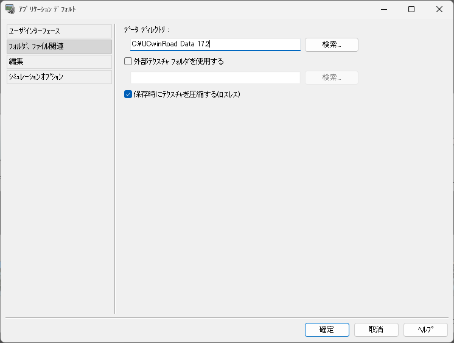
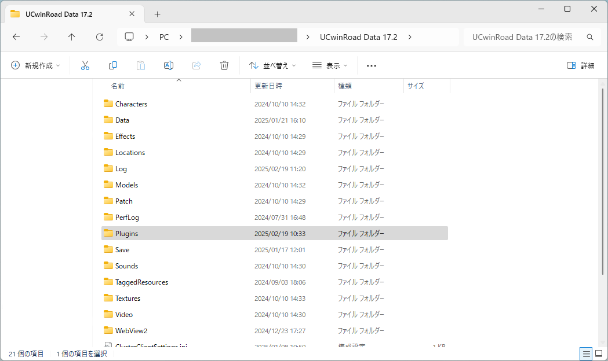
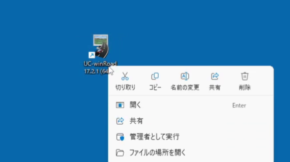
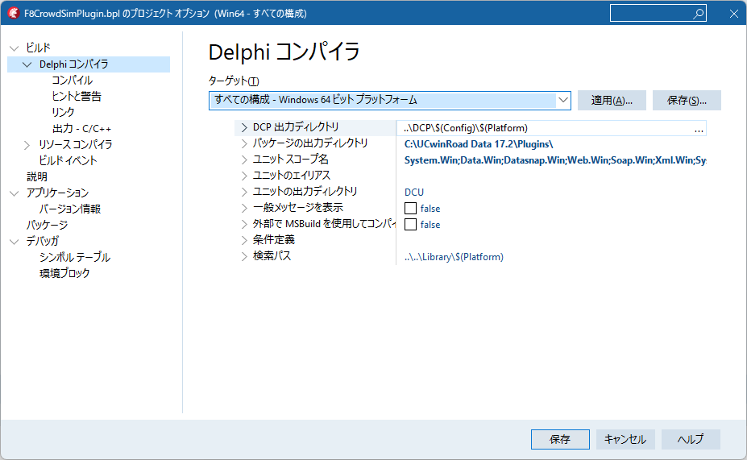
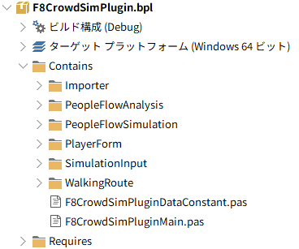

環境構築手順書
1 本書について
本書は、人流シミュレーションプラグイン(UC-win/Roadプラグイン)（以下「本システム」という。）の利用環境構築手順について記載しています。
Tip
本システムの構成や仕様の詳細については技術検証レポートも参考にしてください。
2 動作環境
本システムの動作環境は以下のとおりです。
| 項目 | 最小動作環境 | 推奨動作環境 |
|---|---|---|
| OS | Microsoft Windows10 / 11(64bit) | 同左 |
| CPU | IntelCorei5以上 | 同左 |
| GPU | NVIDIA製GPU | NVIDIA Geforce GTX1650以上(4GB以上のメモリ) |
| メモリ | 16GB以上 | 32GB以上 |
| ストレージ | 最低30GB以上の空き容量 | SSDドライブ 最低60GB以上の空き容量 |
| ディスプレイ解像度 | 1920×1080以上 | 同左 |
| ネットワーク | 必須 | 同左 |
3 インストール手順
Important
本システムを実行するにはUC-win/Roadが必要です。詳細は株式会社フォーラムエイトにお問い合わせ下さい。
フォーラムエイト(HP)
フォーラムエイト(サポートページ)
- GitHubページからF8CrowdSimPlugin.bplをダウンロードします。
- GitHubページからソースファイルをダウンロードします。
- WindowsのエクスプローラでUC-win/Roadのデータディレクトリを開きます。
Tip
データディレクトリの場所は、UC-win/Roadで確認できます。
UC-win/Roadを起動して、メイン画面上部の「ファイル」タブ>>「アプリケーションオプション」>>「デフォルト設定」を押下します。
「アプリケーションデフォルト」画面が開くので、画面左側のタブから「フォルダ、ファイル関連」を選択します。「データディレクトリ」項目に記載されている場所を確認します。
 - データディレクトリ直下の「Plugins」フォルダを開きます(もし「Plugins」フォルダが無ければ作成してください)。
- 「Plugins」フォルダ直下にダウンロードしたF8CrowdSimPlugin.bplを設置します。
- WindowsのエクスプローラでUC-win/Roadの実行ファイル(UCwinRoad.exe)があるフォルダを開きます。
Tip
UC-win/Roadをインストールすると、デフォルト設定ではデスクトップにショートカットが作成されます。
ショートカットを右クリックし、「ファイルの場所を開く」を選択するとUC-win/Roadの実行ファイル(UCwinRoad.exe)があるフォルダを開けます。
 - Shadersフォルダを開きます。
- Pluginsフォルダを開きます。
- ダウンロードしたソースファイルのsrc\F8CrowdSimPlugin\Shadersフォルダ内のCrowdSimMeshフォルダを前項のPluginsフォルダにコピーします。
UC-win/Roadをデフォルト設定でインストールし、手順どおりにインストールを進めた場合、最終的にフォルダ構成は次のようになります。
C:
├─Program Files
│ └─FORUM8
│ └─UCwinRoad 17.2 <------ UCwin/Roadの実行ファイルがあるフォルダ
│ └─shaders
│ └─Plugins
│ └─CrowdSimMesh <------ ダウンロードしたフォルダを設置
└─UCwinRoad Data 17.2 <------ データディレクトリ
│ └─Plugins
│ └─F8CrowdSimPlugin.bpl <------ ダウンロードしたbplを設置
4 ビルド手順
4-1 F8CrowdSimPlugin
Important
F8CrowdSimPluginをビルドするにはUC-win/Road SDKが必要です。詳細は株式会社フォーラムエイトにお問い合わせ下さい。
フォーラムエイト(HP)
フォーラムエイト(サポートページ)
Important
F8CrowdSimPluginをビルドするにはDelphi 10.4.2が必要です。IDE Patchesは全て適用済みの状態にして下さい。
ソースファイルからF8CrowdSimPluginを生成することができます。
ソースファイルはこちらからダウンロード可能です。
ダウンロードしたsrcフォルダ内のF8CrowdSimPluginフォルダ内にソースコード一式があります。
F8CrowdSimPluginフォルダのフォルダ構成は次のようになっています。
├─Importer
│ ├─CityGML
│ ├─MFJSON
│ └─TrafficSensor
├─PeopleFlowAnalysis
│ ├─BusTransportation
│ ├─ExportsForm
│ ├─FlowLog
│ ├─HeatMap
│ ├─ODTrip
│ └─WaitingQueue
├─PeopleFlowSimulation
│ ├─PedestrianMap
│ │ └─PedestrianMapUtil
│ └─Renderer
├─PlayerForm
│ ├─imgs
│ ├─PlayerFormFrame
│ └─SidePanel
├─resources
├─Shaders
│ └─CrowdSimMesh
│ └─Sources
├─SimulationInput
│ ├─Dialog
│ ├─Manager
│ └─PedestrianPopOut
└─WalkingRoute
ビルド方法は次のとおりです。
- UC-win/Road SDKのヘルプファイルに従って開発環境の初期設定を行います。
- 本システムのプロジェクトファイル（F8CrowdSimPlugin.dproj）をDelphi 10.4.2で開きます。
- プラグインの出力先を確認します。
- プロジェクト画面で「F8CrowdSimPlugin.bpl」を右クリックし、「オプション」を選択します。
- 「ビルド」-「Delphiコンパイラ」を開きます。
- 「ターゲット」を「すべての構成 - Windows64ビット プラットフォーム」に変更します。
- 「パッケージの出力ディレクトリ」が「(UC-wi/Roadのデータディレクトリ)\Plugins」になってない場合は変更して下さい。
- ビルド構成を「Release」、ターゲットプラットフォームを「Windows 64ビット」にしてビルドします。
- ビルドに成功すると、前項で確認した「パッケージの出力ディレクトリ」の場所に「F8CrowdSim.bpl」が出力されます。
4-2 シェーダファイルの更新
Shadersフォルダ内のファイルを変更した場合は、インストール手順を参考にCrowdSimMeshフォルダを更新して下さい。
5 準備物一覧
アプリケーションを利用するために以下のデータを入手します。
データの入力方法については操作マニュアルをご参照下さい。
| # | データ種別 | 機能 | 用途 | 入力方法 |
|---|---|---|---|---|
| 1 | 3D都市モデル(CityGML) G空間情報センターから取得します。 |
全般 | 全般 | 格納フォルダパス指定 |
本システムでは、3D都市モデルの道路、建物、都市構造物モデルの形状（LOD3、LOD4）を活用します。 また、歩行エリア編集時の参考情報として建築物の形状も利用しています。
| 地物 | 地物型 | 属性区分 | 属性名 | 内容 |
|---|---|---|---|---|
| 道路LOD1 | tran:Road | 空間属性 | tran:lod1MultiSurface | 道路のLOD1の形状 |
| 道路LOD3. 3 | tran:Road | 空間属性 | tran:lod3MultiSurface | 道路のLOD3の形状 |
| 建築物LOD4 | bldg:Building | 空間属性 | bldg:lod4Solid | 建築物のLOD4の床面の形状 |
| 都市設備LOD3 | frn:CityFurniture | 空間属性 | frn:lod3Geometry | 都市設備の形状 |